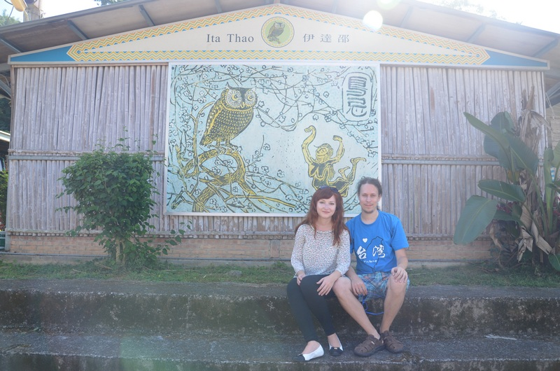
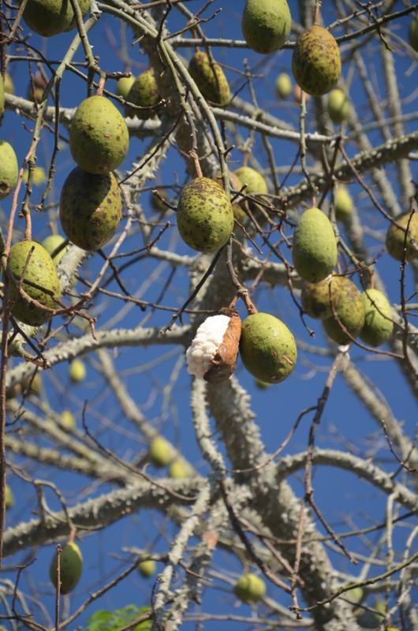
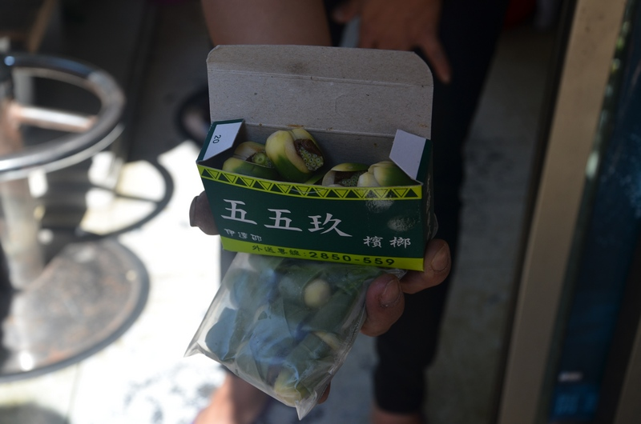
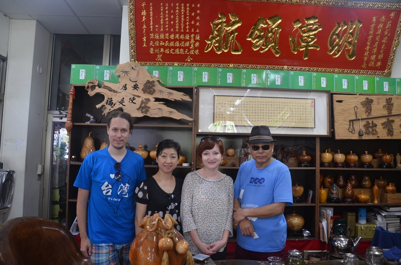
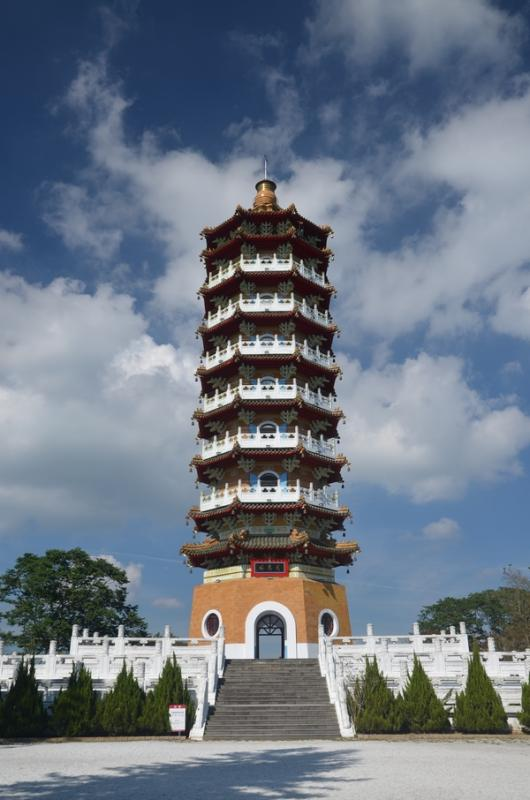
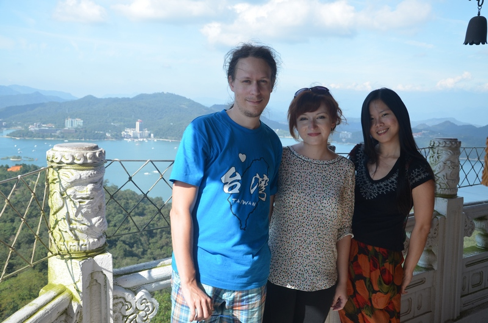
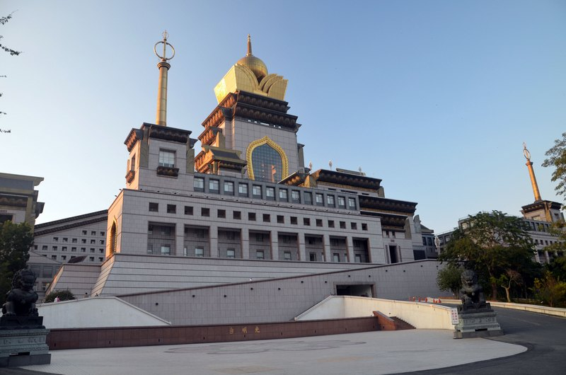
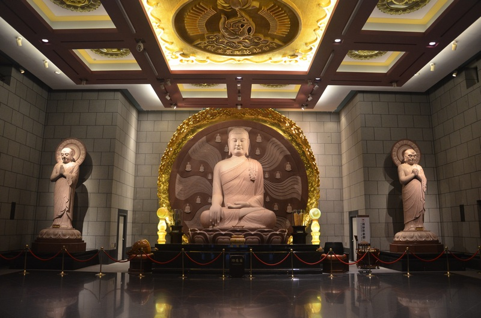
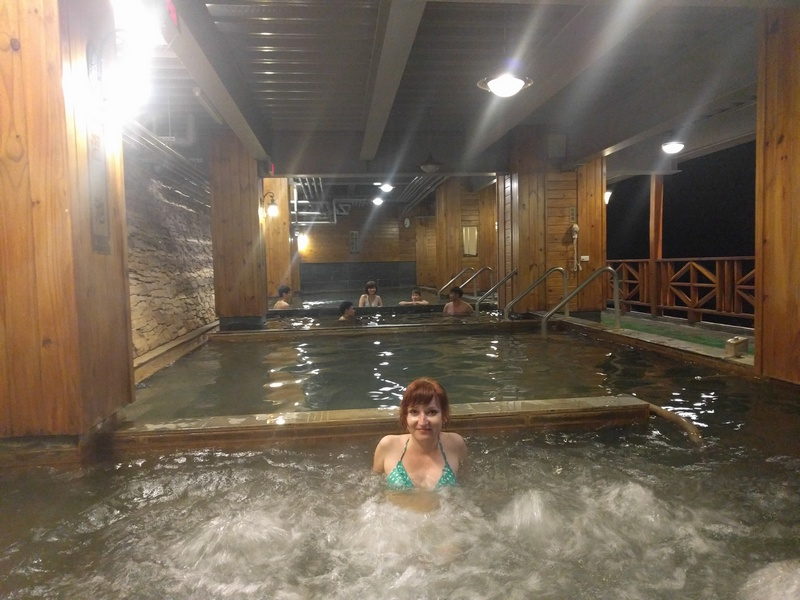

Náš poslední den s Mendy jsme zahájili hned po snídani návštěvou domorodé vesničky kmene Thao, původního obyvatelstva oblasti kolem Sun Moon Lake.

Domorodá vesnička
Po cestě jsme se bavili pozorováním tropických stromů, na kterých rostly pravé nefalšované banány nebo plody papáji. Poprvé v životě jsem taky viděla, jak vypadá bavlník. Nejhojněji využívanou plodinou na ostrově je však… betel :-D.

Bavlník
Žvýkání této drogy patří k oblíbeným kratochvílím místního obyvatelstva. Nejedná se o halucinogen, spíše o stimulant. Alkaloid arekolin obsažený v ořechu má snižovat pocit únavy a navozovat dobrou náladu. Člověka, který holduje betelu, poznáte na první pohled podle zčernalých zubů, na kterých žvýkání betele zanechává své stopy. Vzhledem k tomu, že mě ještě úplně neopustila alishanská závrať, ráda jsem si tento zážitek nechala ujít. Péťa však chtěl betel vyzkoušet, a tak mu Mendy vyjednala u stánku (ano, prodává se to normálně na ulici :-D) jeden vzorek na ochutnávku :D. Dojmy? Pálení v krku a pocit lehké opilosti. Nic vzrušujícího, takže jsme chvíli čekali, než Péťa „vystřízliví“ a mezitím procházeli několik obchůdků se suvenýry.

Betel - kvalitní matroš :)
Protože jsme stále měli pocit, že si musíme z Taiwanu odvést hodně čaje, zamířili jsme neomylně do sympatické čajového krámku, kde nám Mendy domluvila čajovou degustaci :-). Příprava čaje je hotová věda! První výluh se vylévá a pije se až ten druhý – to vše samozřejmě z malinkatých šálků jako v našich čajovnách.

Na čajové degustaci
Majitelé obchodu byli ohromně milí – poprosili nás o společnou fotku a na památku jsme od nich dostali malý dřevěný přívěšek ve tvaru Taiwanu. S novými zážitky a balíčkem čaje jsme se vydali na naši poslední zastávku u Jezera Slunce a Měsíce…

Pagoda Tsen
Pagodu Tsen nechal postavit Čankajšek na počest své matky. Je to místo s překrásnou vyhlídkou na celé jezero, kvůli které se sice musíte vydrápat na kopec a poté ještě vystoupat spoustu schodů, ale stojí to zato. Mendy jsme však museli chvíli přemlouvat – hrozně se bojí výšek :-).

Nahoře
Do městečka Puli, kde jsme se s Mendy měli rozloučit, jsme dorazili někdy odpoledne a bylo mi zrovna hrozně a nedefinovatelně špatně. Tak jsme si tam jen koupili něco malého k jídlu a já čokoládové tyčinky, abych nezkolabovala, a pokračovali rovnou do naší poslední společné zastávky – nedalekého kláštera Chung Tai Chan.

Chung Tai Chan Monastery
Tento chrám se 43 patry je jedna z nejpodivnějších staveb na Taiwanu. Přirovnáván je často ke kombinaci kachlové mešity a kosmické lodi :-). Jedná se o světové centrum buddhistického akademického výzkumu, kultury a umění. Otevřen byl v roce 2001 a navržen architektem CY Lee - autorem Taipei 101. Získal mnohá ocenění za osvětlení a design. Na všechnu práci, od vstupních dveří s obrovskými dřevěnými strážci po 18 nádherných lohanských reliéfů, byli najati jen nejlepší umělci a na stavbu chrámu byly použity prvotřídní materiály. Je to opravdu něco úplně jiného, než všechny ostatní chrámy, které jsme na Taiwanu viděli, ale musím přiznat, že mně se ta stará tradiční architektura líbí prostě mnohem víc :-)

Interiér chrámu
Než jsme si stihli vše prohlédnout, venku už se mezitím setmělo, a byl nejvyšší čas rozloučit se s Mendy a zavést ji na autobus do Puli. Mendy nám byla opravdu neocenitelným průvodcem a překladatelem. Bez ní bychom spoustu věcí vůbec nezažili! Bylo nám líto, že se zase na dlouhou dobu loučíme, ale zároveň jsme se těšili, jak si dnes místo low-costových ubytování, které nám Mendy vybírala, dopřejeme zase něco lepšího. A že jsme se teda ještě měli na co těšit!
O Taiwanu je známo, že na jeho malé ploše vyvěrá obrovské množství horkých pramenů. Doteď jsme se jim úspěšně „vyhýbali“, ale nyní už nám zbývaly pouhé dva dny a abychom opustili Taiwan a nenavštívili žádné „hot springs“, to prostě nepřicházelo v úvahu. Péťa vygůglil nedaleké městečko Lushan, ležící v horách. Čekala nás tedy opět asi hodinová cesta v serpentinách, což v kombinaci s mou celodenní nevolností nevypadalo zrovna jako předzvěst relaxačního večera.
Ovšem jakmile jsem uviděla ten krásný pokoj v krásném hotelu, který pro nás Péťa našel, nevěřili byste, jak se mi z ničeho nic udělalo úplně dobře :-D! Hotýlek ležel u řeky hned na kraji vesnice a byl opravdu za hubičku – se snídaní a se vstupem do lázní v ceně. Takže jsme si jen z auta honem vytáhli plavky a běželi vyzkoušet tu hlavní místní atrakci. Lázně byly dvoupatrové – v horní části byly různé masážní trysky a lehátka a v dolní několik bazénků s různou teplotou vody. Některé byly tedy až moc horké – a že to říkám zrovna já, které žádná voda není dost teplá :-D! Navíc bylo báječné, že ačkoliv byly bazény shora kryté, terasa byla otevřené, takže jsme byli na čerstvém horském vzduchu. Po všech těch vyčerpávajících dnech věčně na cestách to byl hotový balzám na tělo i na duši. No co vám budu povídat – je mnoho pravdy na tom, že bez návštěvy hot springs se z Taiwanu nesmí odjet :-).

Relax v Lushanu
Lushan byl pro nás mimořádný i v tom, jak tam byli všichni přátelští a komunikativní. Jen za ty dvě hodinky v bazénu jsme si popovídali se spoustou lidí – mě oslovily třeba roztomilé důchodkyně z Hong Kongu, které se zvědavě vyptávaly na Českou republiku (jedna z nich byla dokonce v Praze). Skamarádili jsme se tam taky se dvěma Taiwanci, kterým jsme vyprávěli o našem cestování po ostrově a při odchodu nás lákali do baru na skleničku :-D.
Lushan byl zkrátka báječná tečka za celým dnem. A to jsme ještě vůbec netušili, že den následující tohle všecko ještě stokrát trumfne :-)!